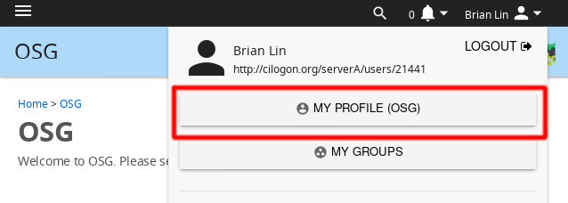
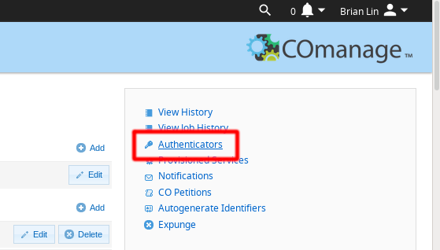
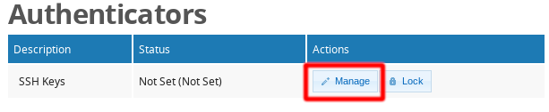
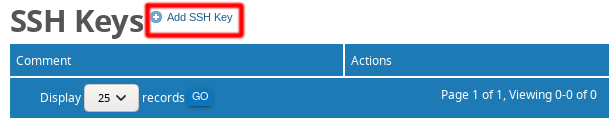

Generate SSH Keys and Activate Your PATh Facility Login¶
Overview¶
Logging into a PATh Facility Access Point requires authenticating your credientials using one of two options: web authentication or SSH key pair authentication. This guide is for users who would like to authenticate using SSH key pairs.
To use this approach, you need to follow a two-step process to associate your SSH key to your PATh Facility account.
-
Generate an SSH key pair.
-
Add your public key to the PATh Access Point by uploading it to your user profile on the PATh Facility registration website.
After completing the process, you can log in to the PATh Access Point (ap1.facility.path-cc.io) from a local computer
(your laptop or desktop) using either ssh or an ssh program like Putty -- see below for
more details on logging in.
NOTE: Please do not edit the authorized keys file on the Access Point.
Step 1: Generate SSH Keys¶
We will discuss how to generate a SSH key pair for two cases:
- "Unix" systems (Linux, Mac) and certain, latest versions of Windows
- Older Windows systems
Please note: The key pair consist of a private key and a public key. You will upload the
public key PATh Facility registration website, but you also need to keep a copy of the private key to log in!
You should keep the private key on machines that you have
direct access to, i.e. your local computer (your laptop or desktop).
Unix-based operating system (Linux/Mac) or latest Windows 10 versions¶
We will create a key in the .ssh directory of your computer. Open a terminal on your local computer and run the following commands:
mkdir ~/.ssh
chmod 700 ~/.ssh
ssh-keygen -t rsa
For the newer OS versions the .ssh directory is already created and the first command is redundant. The last command will produce a prompt similar to
Generating public/private rsa key pair.
Enter file in which to save the key (/home/<local_user_name>/.ssh/id_rsa):
Unless you want to change the location of the key, continue by pressing enter. Now you will be asked for a passphrase. Enter a passphrase that you will be able to remember and which is secure:
Enter passphrase (empty for no passphrase):
Enter same passphrase again:
When everything has successfully completed, the output should resemble the following:
Your identification has been saved in /home/<local_user_name>/.ssh/id_rsa.
Your public key has been saved in /home/<local_user_name>/.ssh/id_rsa.pub.
The key fingerprint is:
...
See Step 2 below to learn how to upload the contents of the .pub file (~/.ssh/id_rsa.pub) to the PATh Facility registration website.
Windows, using Putty to log in¶
If you can connect using the ssh command within the Command Prompt (Windows 10 build version 1803 and later), please follow the Mac/Linux directions above. If not,
continue with the directions below.
-
Open the
PuTTYgenprogram. You can downloadPuttyGenhere: PuttyGen Download Page, scroll down until you see theputtygen.exefile. -
For Type of key to generate, select RSA or SSH-2 RSA.
-
Click the "Generate" button.
-
Move your mouse in the area below the progress bar. When the progress bar is full, PuTTYgen generates your key pair.
-
Type a passphrase in the "Key passphrase" field. Type the same passphrase in the "Confirm passphrase" field. You can use a key without a passphrase, but this is not recommended.
-
Click the "Save private key" and "Save public key" buttons to save both keys. You must save both keys. You will need them to successfully login from your machine.

- In Step 2 below, you will upload your public key to the PATh Facility registration website. The expected key is a single line, with three fields looking something like
ssh-rsa ASSFFSAF... user@host.
Step 2: Add the public SSH key to login node¶
To add your public key to the PATh Facility registration website:
-
Go to the PATh Facility registration website and sign in with the institutional identity you used when requesting an account.
-
Click your name at the top right. In the dropdown box, click "My Profile (OSG)" button.

-
On the right hand side of your profile, click "Authenticators" link.

-
On the authenticators page, click the "Manage" button.

-
On the new SSH Keys page, click "Add SSH Key" and browse your computer to upload your public SSH key. The expected key is a single line, with three fields looking something like
ssh-rsa ASSFFSAF... user@host. Mac Operating Systems: When you click "browse", your Mac Finder window will appear. At the top of the Finder window, open the drop-down box and select "Macintosh HD". Then navigate to "Users" and select your username. Using your keyboard, type
Command + Shift + .to reveal hidden files and directories. Open the.sshdirectory, and select theid_rsa.pubfile. Click the "Upload" box to upload your public SSH key.Windows Operating Systems: When you click "browse", an Explorer window will appear. Navigate to the directory where you saved your public key file. Select it and click the "Upload" box to upload your public SSH key.
Linux Operating Systems: When you click "browse", the window that appears may vary depending on your Linux operating system as well as your browser. You will want to navigate to your
id_rsa.pubfile, which is typically found in the path ofUsers/[your user name]/.ssh. To show hidden files/directories on a machine running Ubuntu or Debian, use the keyboard shortcutctrl + h. If you have trouble finding yourid_ssh.pubfile for your specific Linux environment, there are many resources online. Additionally, our Research Computing Facilitators are here to help you should you need it. -
Once you have added your public key, click "Update". You should be able to login within a few hours.
Can I Use Multiple Keys?¶
Yes! If you want to log into the PATh Facility from multiple computers, you can do so by generating a keypair on each computer you want to use, and then adding the public key to your PATh Facility profile.
Logging In¶
After following the steps above to upload your key and it's been a few hours, you should be able to log in to begin using PATh Facility compute resources.
For Mac, Linux, or newer versions of Windows¶
Open a terminal and type in:
ssh <your_PATh_Facility_username>@ap1.facility.path-cc.io
It will ask for the passphrase for your ssh key (if you set one) and then you should be logged in.
For older versions of Windows¶
On older versions of Windows, you can use the Putty program to log in.

-
Open the
PutTTYprogram. If necessary, you can download PuTTY from the website here PuTTY download page. -
Type in
ap1.facility.path-cc.ioas the as the hostname address. Leave Port22as the default Port number. -
In the left hand menu, click the "+" next to "SSH" to expand the menu.
-
Click "Auth" in the "SSH" menu.
-
Click "Browse" and specify the private key file you saved in Step 1.
-
Return to "Session".
a. Name your session
b. Save session for future use -
Click "Open" to launch shell. Provide your ssh-key passphrase (created above in PuTTYgen) when prompted to do so.
Get Help¶
For questions regarding logging in or creating an account, contact us at
support@path-cc.io.